Nocta | Mobile Application Concept
Transforming complex CPAP data into personalized, actionable insights to improve user confidence and long term usage
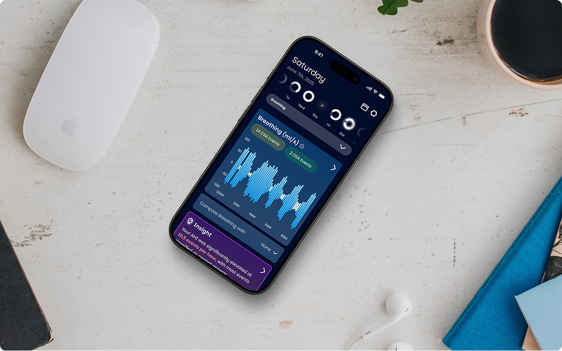
What is Sleep Apnea?
Sleep apnea is a disorder in which breathing repeatedly stops and starts during sleep. This can cause pauses in breathing for periods of time, ranging from a few seconds to minutes, and may occur many times throughout the night.
There are 2 main types of apnea: Central sleep apnea (CSA), and Obstructive sleep apnea (OSA).
Obstructive Sleep Apnea
is caused by blockages in the upper airways that restricts oxygen to the body

Central Sleep Apnea
occurs when the brain's area that controls your breathing doesn't work, causing you to simply not breathe.

What is a CPAP Machine?
CPAP or "Continuous Positive Airway Pressure" is a machine that delivers a steady stream of pressurized oxygen through a mask worn over the nose or mouth, keeping the upper airways open during sleep and preventing breathing interruptions.
Machine pressures and timings can be customized to either central or obstructive sleep apnea patients.
Types of CPAP machines
 ResMed Airsense 11
ResMed Airsense 11
 ResMed Airsense 10
ResMed Airsense 10
Types of CPAP masks
 ResMed Airfit P30i
ResMed Airfit P30i
 ResMed Airfit F30i
ResMed Airfit F30i
 ResMed Airfit F20
ResMed Airfit F20
Finally, what is "compliance"?
Compliance refers to how consistently a person uses their CPAP machine as prescribed by their doctor. It's often defined as using the device for at least 4 hours each night on at least 70% of nights within a 30-day period.
Failure to meet compliance can result in loss of insurance coverage and paying out-of-pocket for all equipment and maintenance supplies.
Minimum usage to meet compliance
The majority of patients were not sticking with their therapy long term
To find out more about the disorder, I did secondary research and found the following statistics from the National Library of Medicine, BMC Pulmonary Medicine, and the Journal of American Heart Association.
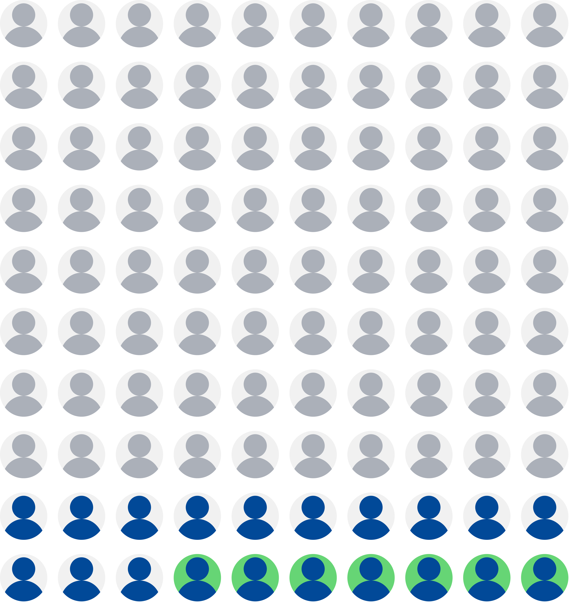
Only 6.8% of all people with sleep apnea are diagnosed AND stick with their treatment long term
How might we
make CPAP data more actionable and engaging so users feel empowered rather than overwhelmed?
Solution
Simplify CPAP data into clear, actionable insights that boost confidence, drive compliance, and support long-term success.
Morning Check-In
Just focusing on pure sleep numbers can only do so much, so incorporating user sentiment can increase the accuracy of the insight
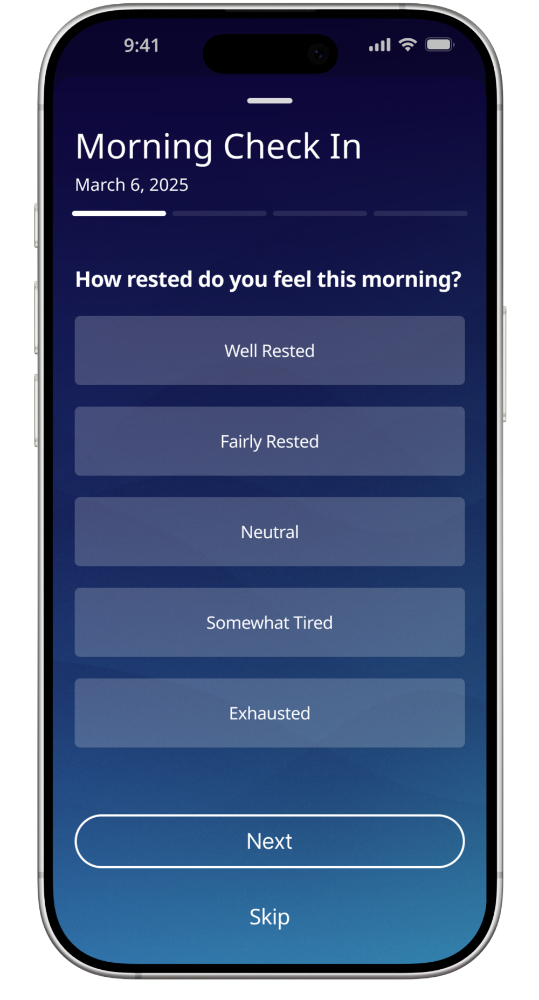
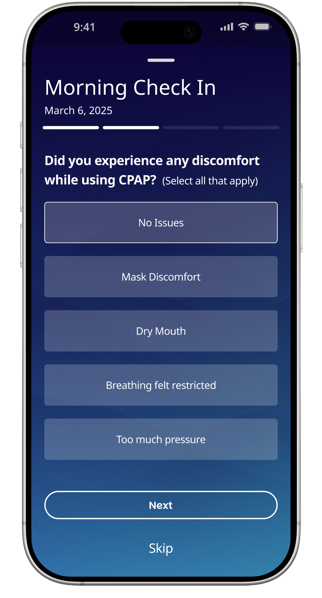
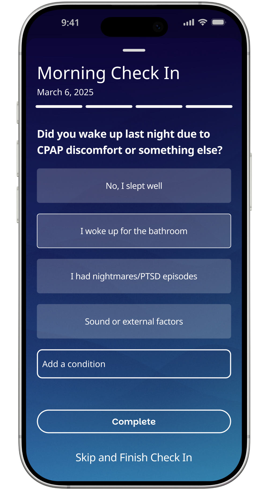
Single Chart
The allows users to explore their breathing data in detail, with apnea events clearly marked and tappable for expanded explanations.
Users can compare their breathing patterns against other key metrics, such as pressure, leak rate, or snoring, using a dynamic overlay feature.
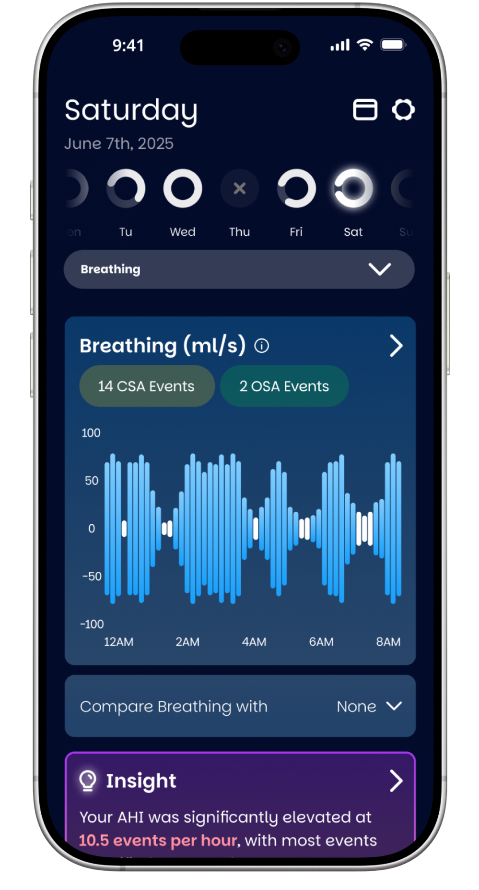
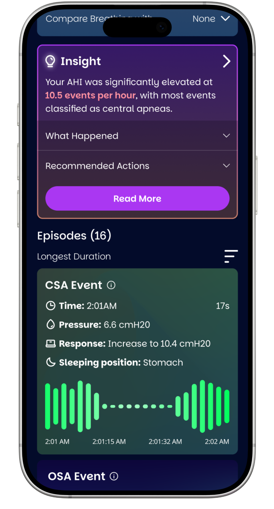
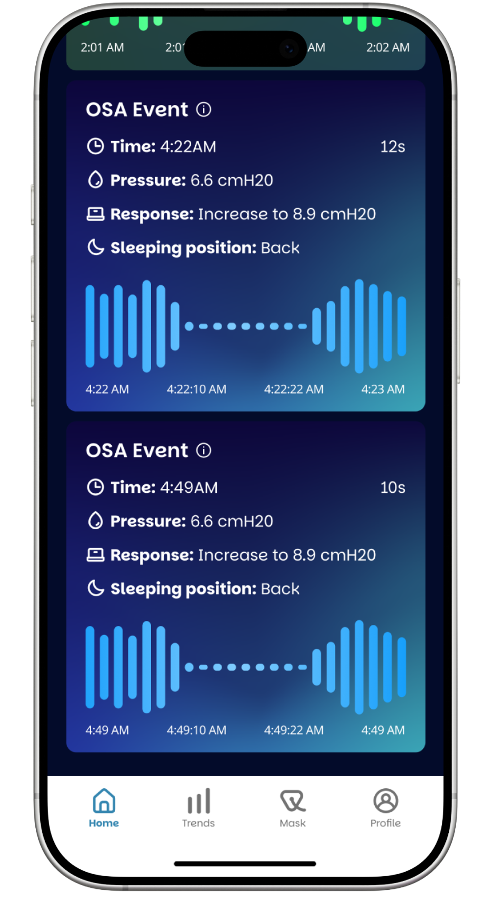
Trends
This helps users reflect on their long-term progress with customizable timeframes and a clean summary and insights.
Users can also compare their best and worst nights, revealing what changed and why. By highlighting meaningful patterns over time, the feature supports habit-building, reinforces positive behaviors, and makes therapy feel more measurable and manageable.
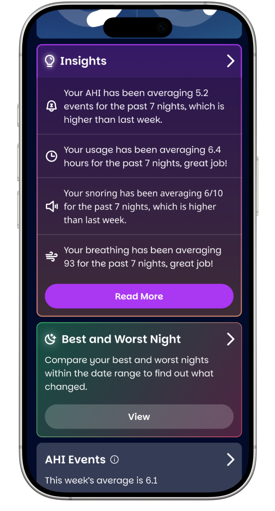
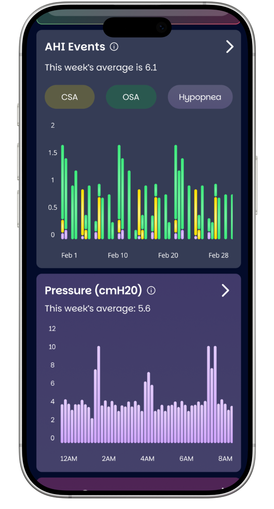
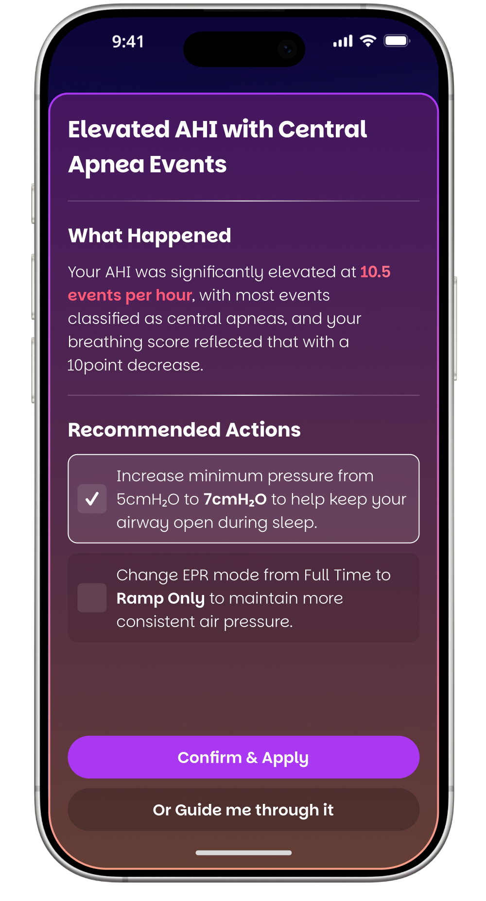
What do real users think of this product?
I invited back my survey and interview participants to test my mid-fidelity wireframes and got some great feedback on current/missing features and edge cases I hadn't thought of before.
Insight
Users asked about CPAP compliance and health insurance participation
Solution
Add a compliance / insurance participation to the onboarding flow and design a compliance tracker
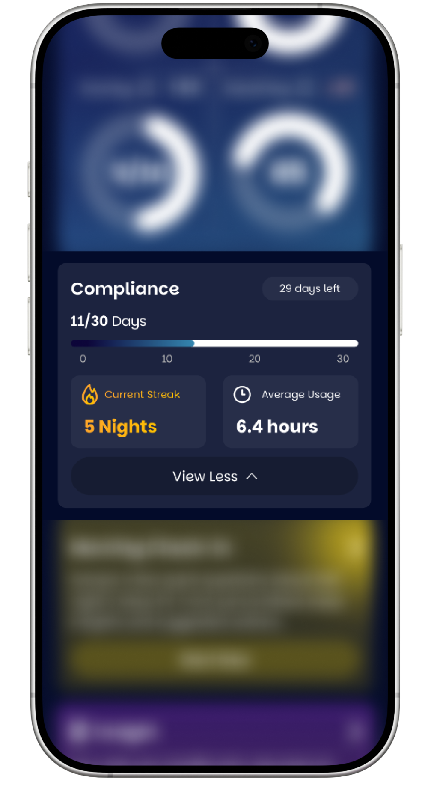
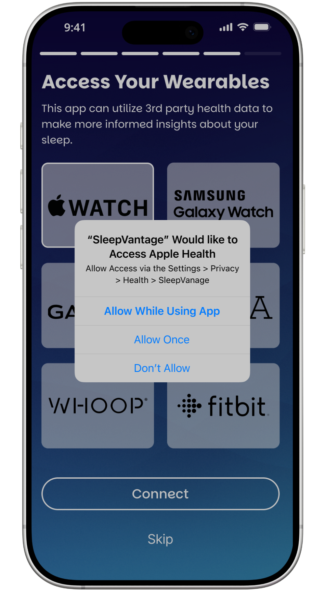
Insight
Patients asked about linking smart health wearables to the app for more data tracking
Solution
Add an option to link smart wearables on onboarding and display their data on the app
Insight
Many patients wanted to be able to customize the four main stats on the homepage freely
Solution
Allow the user to edit what stats they want to see, including any smart wearable device metrics
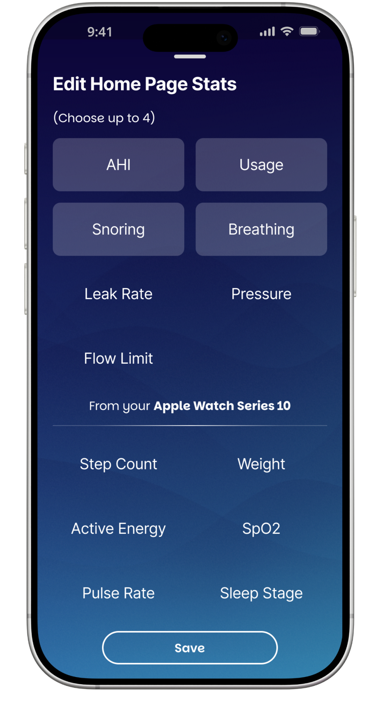
A more personal way to treat sleep apnea
By transforming complex CPAP data into scannable cards and actionable insights, Nocta helps sleep apnea patients with their CPAP therapy, encouraging continued usage and familiarity with their treatment.
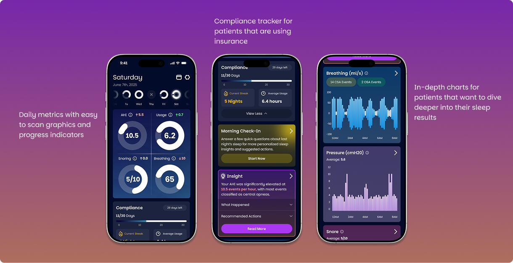
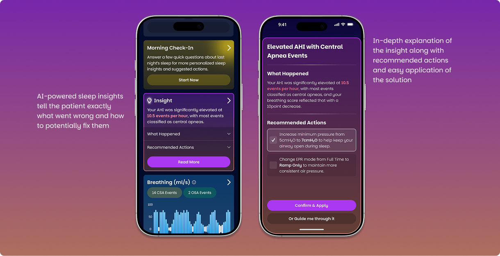
Reduce Confusion
by translating raw CPAP data into personalized, plain-language insights that users can understand and act on.
Boosts Confidence
by helping users identify what's working, what's not, and how to make adjustments.
Supports long term usage
through gentle habit-building features that encourage consistent use over time
A live site you can interact with!
In addition to designing this application, I have also coded a working MVP version, linked below. Features include using my own personal CPAP data, Morning Check In, and OPENAI's API to generate sleep insights.
Languages: HTML, CSS, JavaScript
Technology: OpenAI API, SleepHQ API